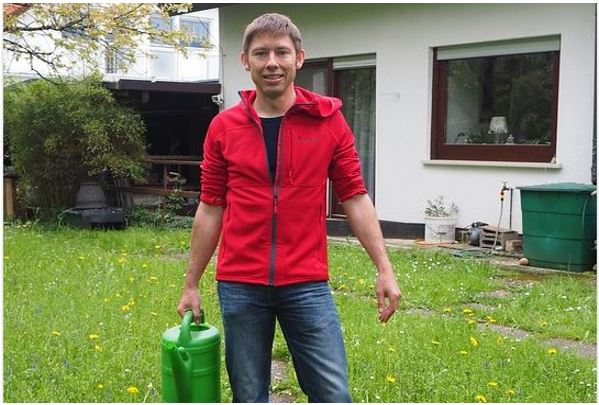
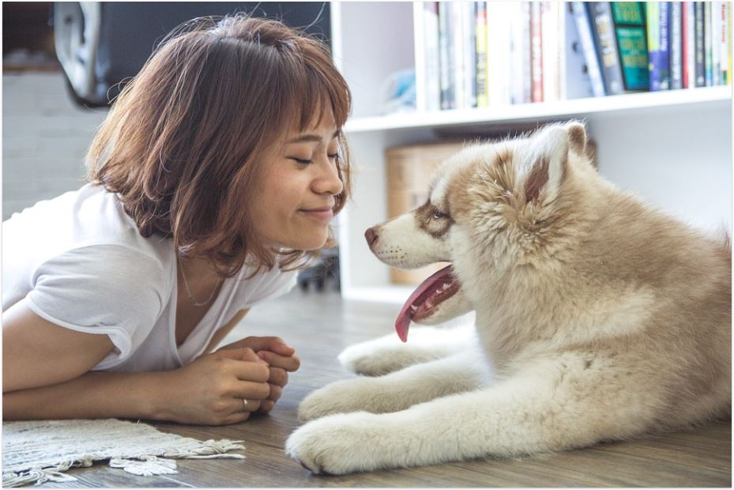

Lily is a student that has helped out every Wednesday after school and every Sunday afternoon for
the past two years. She enjoys caring and playing with the pets especially the new puppies and
kittens. Her jobs include feeding, playing, walking and cleaning the animals and their homes. Lily is
very passionate about the animals and loves their company. Lily plans to become a vet when she
leaves school, so volunteering at Paws has given her some basic knowledge and experience
around working with the animals.
John

John is a very experienced volunteer as he has been working here for the past seven years. He
gives up his time most Saturdays and some Sundays to work here. He enjoys working with the
animals but will spend most of his time outdoors doing jobs such mowing the lawns, gardening and
keeping our grounds spick and span. He always offers to help with any fund raising events that we
attend. John is a hard worker and we are very thankful for the amount of time and effort he puts
into volunteering at Paws.
Emma

Emma has been volunteering for just three months now and adores the pets we have here. She
comes after work every Tuesday and a full day every second Friday. She is a nurse so has the
caring nature towards those animals that are unwell. Emma does jobs such as cleaning, feeding
and spends lots of time with the animals who are new or sick. Emma is so gentle and patient with
the animals and an incredible addition to the volunteering team here at Paws.